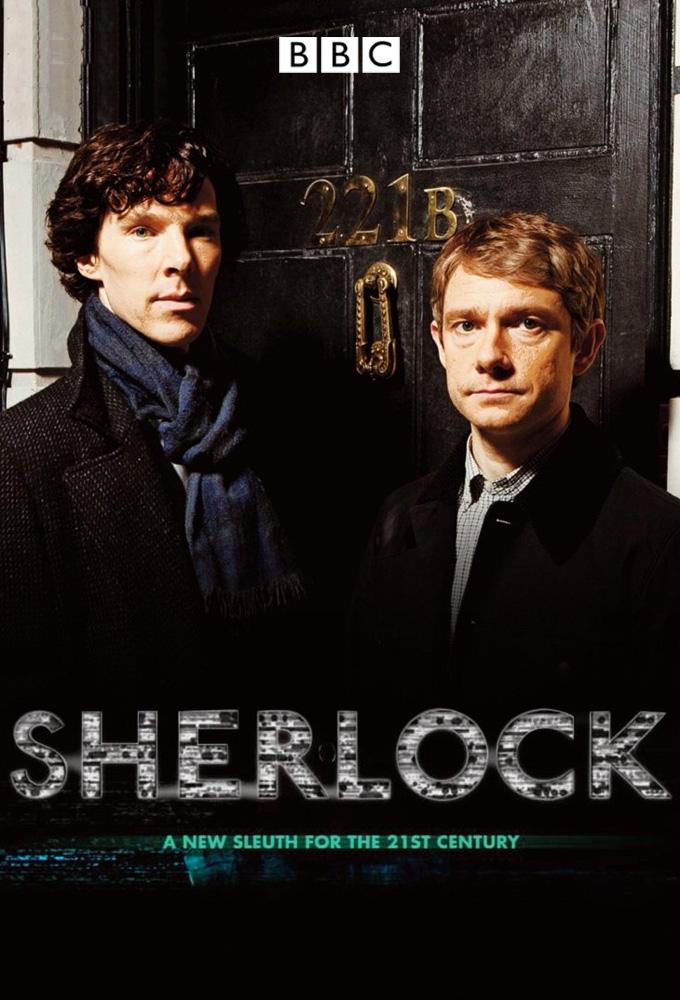

Top 5 seriali - moja ocena
Sherlock
Sherlock – brytyjski serial telewizyjny emitowany przez BBC One od 25 lipca 2010 roku, stworzony przez Stevena Moffata i Marka Gatissa. Jest uwspółcześnioną interpretacją opowiadań Arthura Conana Doyle’a o detektywie Sherlocku Holmesie. Tytułową rolę odtwarza Benedict Cumberbatch, a rolę doktora Watsona odgrywa Martin Freeman.
Serial otrzymał w większości pozytywne recenzje. Zdobył nagrodę BAFTA dla najlepszego serialu telewizyjnego (2011), a Freeman i Andrew Scott za swoje role otrzymali tę nagrodę w kategorii najlepszego aktora drugoplanowego. W 2014 roku Sherlock został wyróżniony nagrodami Emmy dla najlepszego aktora pierwszoplanowego (Cumberbatch) i drugoplanowego (Freeman) w miniserialu oraz za scenariusz odcinka Jego ostatnia przysięga, a w 2016 roku – dla najlepszego filmu telewizyjnego za odcinek Upiorna panna młoda.
